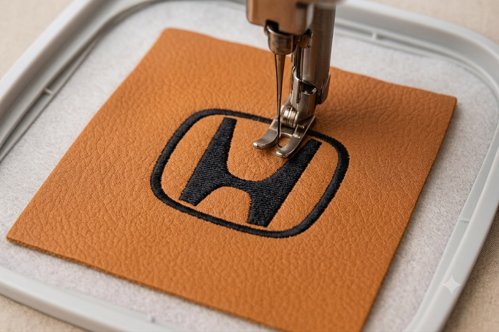

PREMIUM AUTOMOTIVE INTERIORS
Crafted For
Drivers.
Custom automotive interiors inspired by JDM and European performance culture.
Showcase
PREMIUM AUTOMOTIVE INTERIORS
Custom automotive interiors inspired by JDM and European performance culture.
Showcase
Personalized stitching and embroidered details crafted for a unique interior identity.

Carefully selected fabrics and finishes inspired by luxury automotive craftsmanship.

Every project is built with attention to precision, aesthetics, and driving experience.
AUTOMOTIVE CRAFTSMANSHIP

Hand-finished stitching focused on detail, durability, and performance-inspired aesthetics.

Carefully selected textures and finishes inspired by modern luxury interiors.

Custom interior enhancements tailored to each driver and every automotive identity.